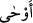

etmektedir. Nitekim “O sizi şüphesiz tavır tavır (çeşitli aşamalardan geçirerek)
yaratmıştır” (Nûh 71/14) buyrulmuştur. İşte kalbin ilk aşaması, “kerker” denilen
vesvese mahallidir; ikincisi “seâf” denilen hevâcis mazharıdır. Üçüncüsü “fuâd”
denilen rü’yet madenidir – nitekim “Kalp, (gözün) gördüğünü yalanlamadı.” (en-
Necm 53/11) buyrulmuştur; dördüncüsü “kalp” denilen hikmet menbaıdır. Nitekim Nebî
(s.a.) “Hikmet pınarları kalbinden lisanına dökülmüştür” buyurmuştur. Beşincisi
“suveydâ” denilen gayb aynasıdır. Altıncısı “şeğâf” denilen muhabbet karargâhıdır.
Nitekim “Yûsuf aşkı onun gönlüne işlemiş” (Yûsuf 12/30) buyrulmuştur. Yedincisi ise
kalbin sevgisidir ki tecellî ve keşif mahalli, sırların merkezi ve nurların iniş yeridir.
“Ve her göğün işini, kendisine vahyederek bildirdi.” Bu ifâde ()’ye mâtuftur. () ‘vahyetme’ fiili de tıpkı ( ) gibi, var etmekten ibaret olup mâtûf-i aleyhinin
) gibi, var etmekten ibaret olup mâtûf-i aleyhinin
kayıtlı olduğu zamanla kayıtlıdır.
Râgıb şöyle der: Bir şeyin ilk olarak yaratılışı “emr” olarak anlatılır ki âyetteki de bu
mânâya hamledilmiştir: “Göklerin ve yerin her birinde, içerisindeki melekler,
gezegenler ve Allah’tan başkasının bilmediği diğer varlıkları yarattı ve irâde ettiği
şeyleri ortaya çıkardı” demektir. Katâde ve Süddî de bu görüştedir. Yahut () her
birine emirlerini bildirdi ve kendilerini uygun görevlerle mükellef kıldı, demektir.
Mesela, kimi sürekli ayakta olup kıyâmete kadar hiç oturmaz, kimi secde hâlinde olup
ebediyyen başını kaldırmaz. Bu durumda () normal anlamında ve söz konusu kayıttan
âzâde demektir; emreden Allah, emredilen ise bütün göklerdekilerdir. () -mülâbeset
alâkası ile- bizzat ‘semâ’ya izâfe edilmiştir; çünkü emrin semâya verilmesi,
semâdakilere verilmesi demektir.
“Yakın göğü de ışıklarla,” yani geceleri ampul gibi ışık saçan yıldızlarla “donattık.”
‘Yakın göğü’; çünkü bu cisimlerin hepsini; yakın göğün üzerinde imiş gibi görüyorsun.
Başka bir ifâdeyle göğü de yakın kandillerle; kandil gibi yıldızlarla donattık, demektir.
Maksad, Allah’ın göklerde yaratmış olduğu sâbit ve seyyâr ışıklı gök cisimleridir.
Bunların tamamı yakın gökte değildir. Bunlar arz sâkinlerine yakın olanlardır. Çünkü
yedi gezegenden her biri bir yörüngededir. Sâbit gök cisimleri ise sekizinci semâda
yerleşiktir. Ancak bunların yakın göğün üzerinde yerleşik olması, yakın göğün süsü
olması ile çelişmez. Çünkü biz bütün gök cisimlerini gökyüzünde yakılmış birer kandil
gibi görmekteyiz. Bununla birlikte, ‘Bütün semâlarda yıldızlar olduğu’ söylendiği gibi,
tersine, ‘yıldızların tamamen yakın göğe âid olduğu’da söylenmiştir. Yine, ‘Arz nasıl
peygamber ve velîlerle süslenmişse, âriflerin kalpleri nasıl hidâyet ve tevhîd ışığı
konularak mârifet nurları ile, müminlerin organları nasıl ibadet ve hizmetle, cennet nasıl
âriflerin münâcâtı ve hizmetleriyle süslenmişse gökyüzü de kerrûbîlerin nurları ile
süslenmiştir’ de denmiştir.
Gönül ehlinin alnındaki nûra yönelip dilencilik et,
Şem’ini bu mahfilden ölü bir gönül olarak götürürsün, niçin?”